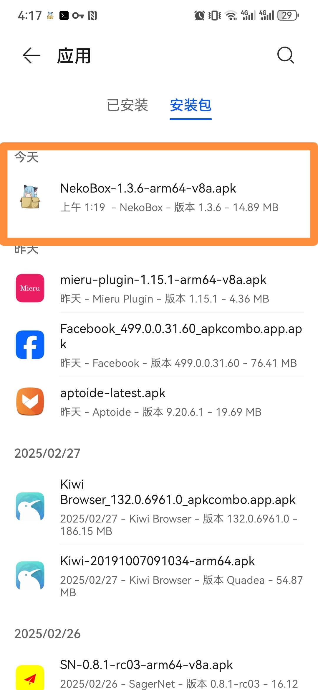
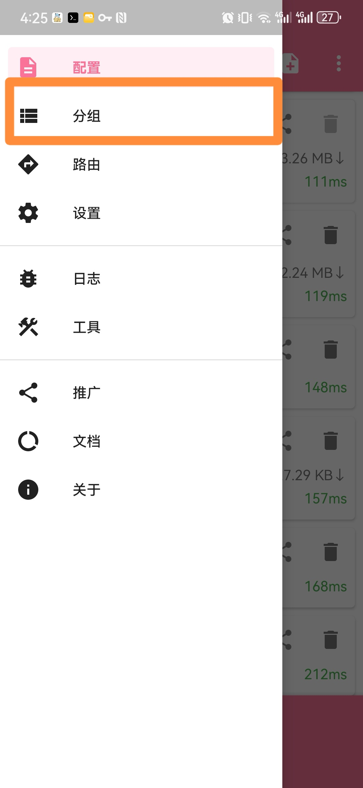
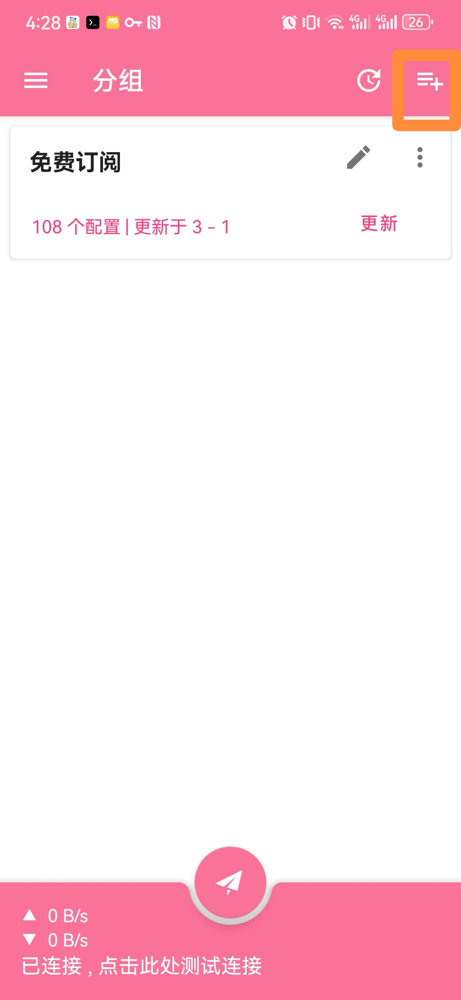
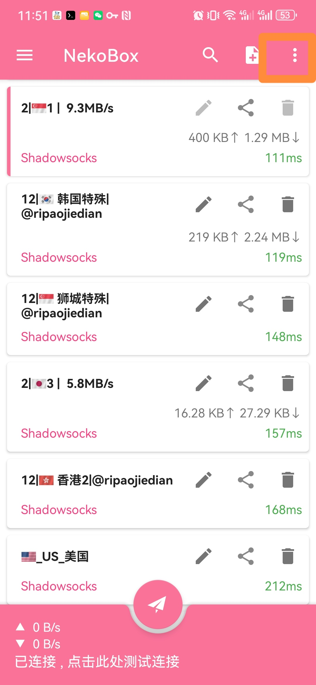
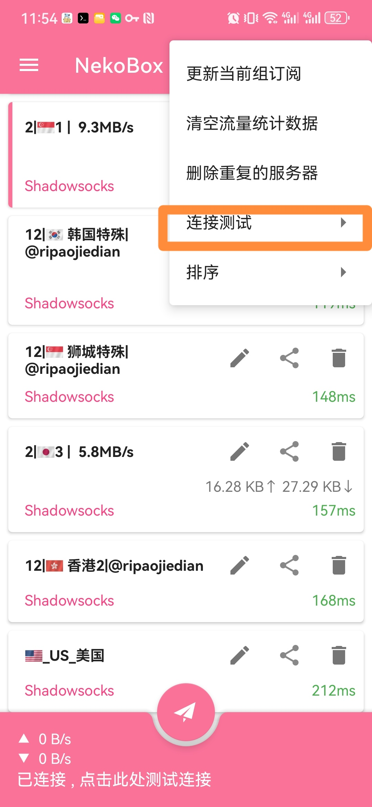
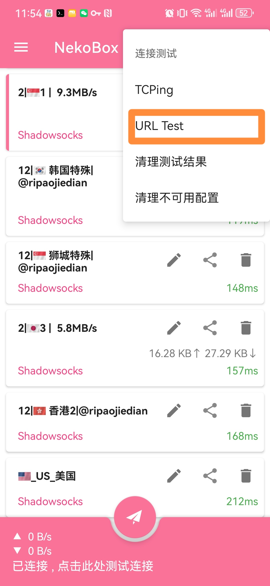
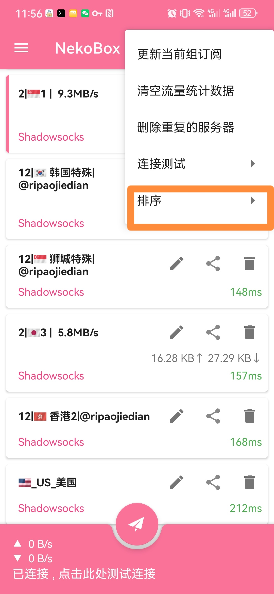
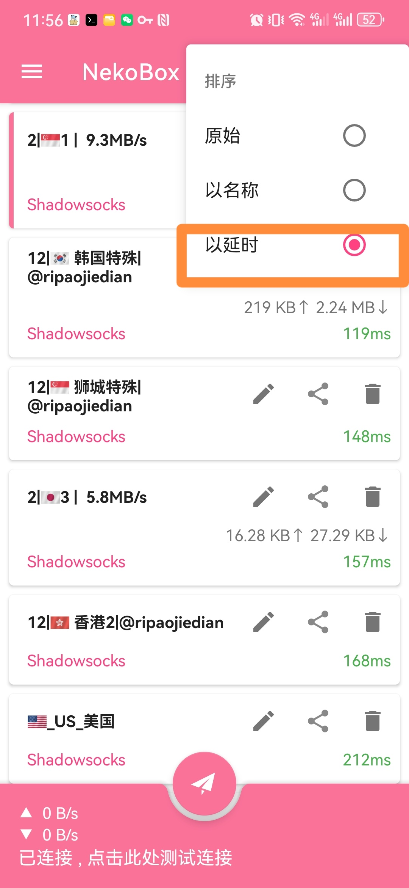

NekoBox 教程
NekoBox是一个功能强大的网络代理工具，支持多种协议和传输方式。
NekoBox使用教程
🔔 注意事项
如果配置代理后发现访问国内的网站速度变慢，可直接点击左上角三个横条，选择路由，把里面的开关全部打开，然后重启代理就好。
第一步：适用平台
Android 用户可以下载 NekoBox客户端，点击以下链接：NekoBox.apk
第二步：配置 NekoBox
- 下载 app 通过文件管理器安装 app。 
- 打开 app 选择左上角的三个横条打开左滑菜单。
- 请联系我们购买订阅链接。得到链接后新增订阅。然后点击分组，再点击右上角的加号新建分组。  
- 点击分组类型选择订阅点击订阅链接把得到的链接输入进去, 启用自动更新。点击右上角对号保存分组设置。
- 保存好分组后，点击左上角三个横条选择配置，回到服务器列表页。再点击右上角竖着的三个点，点击更新当前组订阅，等待更新完成。 


第三步：如何选择可用的节点
- 再点击右上角竖着的三个点，点击连接测试，选择URL Test 等待测试完成。  
- 再点击右上角竖着的三个点，点击排序 选择以延时。  
- 等待测试完成，选择延迟(绿颜色的带ms字样的)较小的且不能为负值的节点，单击即可。
- 单击完了，别忘了下面的带斜线的纸飞机开关哦，开启了斜线就会消失哦。
- 打开浏览器，访问 Google 试下吧。